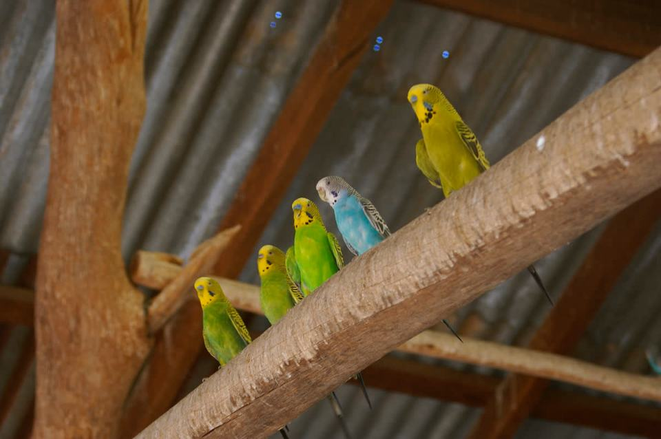

Erarbeiten lassen
Kräuter, Gräser, Kolbenhirse oder Futter an wechselnden Stellen regen natürliches Suchen und Knabbern an.
Ein einzelner Wellensittich im Käfig ist kein Haustier. Es ist ein einsames Tier in einer Zelle.

Ein einzelner Vogel wird nicht zahm. Er wird einsam.
Diese Zeile gehört direkt neben jeden Käfigkauf, bei dem „erst mal einer“ geplant ist.
Er richtet sich verzweifelt auf Menschen aus, weil kein Artgenosse antwortet.
Mindestens ein passender Partner, Freiflug und Schwarmverhalten sind keine Extras, sondern Grundbedürfnisse.
Der hartnäckigste Mythos: Ein einzelner Wellensittich werde zahmer und „spreche“ besser. In Wahrheit spricht ein einzelner Wellensittich nicht, weil er sein Talent entfaltet – er vokalisiert, weil er verzweifelt nach einem Artgenossen sucht. Der Kontaktruf eines einsamen Wellensittichs ist kein niedlicher Partytrick. Es ist ein Hilferuf.
Wellensittiche, Nymphensittiche, Kanarienvögel, Zebrafinken und die meisten Papageienarten sind obligat soziale Tiere. Einzelhaltung verursacht chronischen Stress, Verhaltensstörungen (Federrupfen, stereotypisches Kopfwippen, Apathie) und verkürzt die Lebenserwartung.
Mindestens paarweise halten. Noch besser: ein kleiner Schwarm ab vier Tieren.
Vögel besitzen vier Zapfentypen in der Netzhaut, Menschen nur drei. Der vierte Zapfen nimmt ultraviolettes Licht wahr. Unter normalem Innenraumlicht fehlt UV – für den Vogel bedeutet das: Die Farben der Artgenossen sehen falsch aus, die Futterbewertung ist gestört, die Partnerwahl wird beeinträchtigt.
Für Vögel, die in Innenräumen leben, ist eine Tageslichtlampe mit UV-Anteil Pflicht. Normale Leuchtmittel reichen nicht. Die Lampe sollte 10–12 Stunden am Tag leuchten und danach komplett ausgeschaltet werden – Vögel brauchen auch Dunkelheit zum Schlafen.
Beschichtete Pfannen und andere PTFE-Oberflächen setzen beim Überhitzen Dämpfe frei, die für Vögel im selben Raum lebensgefährlich sind. Küchenluft und Vogelzimmer gehören getrennt.
Ein Käfig ist ein Schlafplatz und Rückzugsort. Nicht mehr. Vögel brauchen täglich mehrere Stunden sicheren Freiflug in einem vogelsicheren Raum (Fenster geschlossen oder gesichert, keine offenen Töpfe, keine Ventilatoren, keine giftigen Pflanzen, kein Teflon in der Küche).
Eine Außenvoliere – wenn möglich mit beheizbarem Schutzhaus – ist die beste Haltungsform. Frische Luft, natürliches UV-Licht und Witterungsreize stärken das Immunsystem und das Wohlbefinden enorm.
Der wichtigste „Trick“ ist nicht, dass ein Vogel etwas für Menschen vorführt. Wichtig ist eine Umgebung, in der er selbst aktiv sein kann.
Kräuter, Gräser, Kolbenhirse oder Futter an wechselnden Stellen regen natürliches Suchen und Knabbern an.
Ungiftige Naturäste, Schaukeln und Landeplätze machen den Raum interessanter als Plastikstangen im Käfig.
Rituale, Ansprache und freiwilliges Targettraining können bereichern. Ein Partner bleibt trotzdem unersetzlich.
Ein Spiegel im Käfig ist keine Gesellschaft. Der Vogel erkennt sein Spiegelbild nicht als sich selbst und versucht, mit dem „anderen Vogel“ zu interagieren, der nie antwortet. Das führt zu Frustration, Aggressivität und Kropfentzündungen (durch Fütterungsversuche am Spiegel). Plastikvögel sind genauso sinnlos.
In der Natur bedeutet Schwäche zeigen: gefressen werden. Deshalb verbergen Vögel Krankheitssymptome, bis sie nicht mehr können. Wenn dein Wellensittich aufgeplustert auf der Stange sitzt, wenig frisst oder am Käfigboden hockt, ist das ein Notfall – nicht ein „schlechter Tag“.
Regelmäßige Beobachtung ist entscheidend: Frisst der Vogel? Wie sieht der Kot aus? Sind die Federn in Ordnung? Ist der Vogel aktiv? Veränderungen im Verhalten sind oft das einzige Frühwarnsystem.
Schauwellensittiche (auch „Standard“-Wellensittiche) werden auf Größe und Kopfgefieder gezüchtet. Das Ergebnis: übermäßig langes Stirngefieder, das den Vögeln die Sicht verdeckt. Manche Schauwellensittiche können kaum noch sehen und sind dadurch unsicher, stressanfällig und in ihrer Bewegungsfreiheit eingeschränkt. Das ist Qualzucht – auch wenn es unter Züchtern als „Rassestandard“ gilt.
Nein. Wellensittiche sind Schwarmvögel und brauchen mindestens einen Artgenossen, ausreichend Flugraum und Beschäftigung.
Wa(h)re Haustier(liebe) ist ein privates Projekt – werbefrei, unabhängig und ehrenamtlich. Die laufenden Kosten für Hosting, Domain und Recherche tragen wir selbst. Wenn dir diese Seite geholfen hat, freuen wir uns über Unterstützung – für uns oder direkt für den Tierschutz:
Spenden an uns als Privatpersonen sind nicht steuerlich absetzbar. Die Streunerhilfe Plau e. V. ist ein eigenständiger gemeinnütziger Verein – dort ist deine Spende steuerlich absetzbar und fließt direkt in die Versorgung und Kastration von Streunerkatzen.